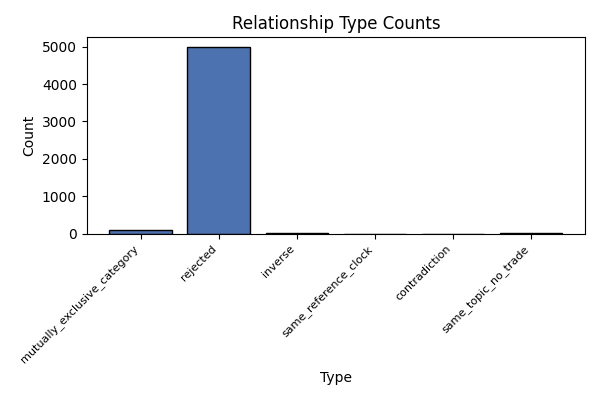
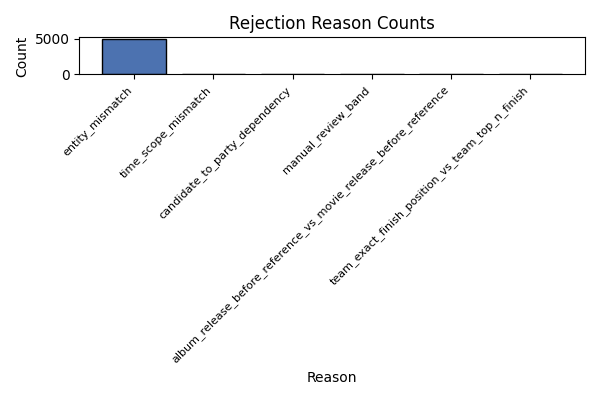
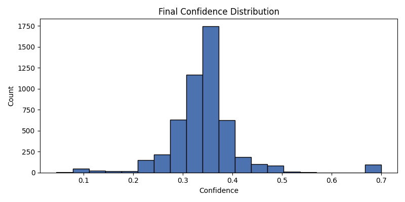

Generated: 2026-05-12T08:28:49Z
| Type | Count |
|---|---|
| rejected | 4997 |
| mutually_exclusive_category | 99 |
| inverse | 10 |
| same_topic_no_trade | 9 |
| same_reference_clock | 5 |
| contradiction | 2 |

| Reason | Count |
|---|---|
| entity_mismatch | 4931 |
| time_scope_mismatch | 108 |
| candidate_to_party_dependency | 70 |
| manual_review_band | 9 |
| album_release_before_reference_vs_movie_release_before_reference | 8 |
| team_exact_finish_position_vs_team_top_n_finish | 3 |


| relationship_id | market_id_a | market_id_b | type | family | status | strategy_eligibility | question_a | question_b | final_confidence | entity_score | time_score | threshold | candidate_a | candidate_b | shared_event |
|---|---|---|---|---|---|---|---|---|---|---|---|---|---|---|---|
| 20878771e91b87f615499925f6d0cfb5 | 561978 | 561981 | mutually_exclusive_category | category | accepted | eligible | Will Donald Trump Jr. win the 2028 Republican presidential nomination? | Will Vivek Ramaswamy win the 2028 Republican presidential nomination? | 0.7 | 0.0 | 1.0 | Donald Trump Jr | Vivek Ramaswamy | 2028_republican_presidential_nomination | |
| b80c1c6747f94c0280c6121bbbe39564 | 561247 | 561251 | mutually_exclusive_category | category | accepted | eligible | Will Tim Walz win the 2028 US Presidential Election? | Will LeBron James win the 2028 US Presidential Election? | 0.7 | 0.0 | 1.0 | Tim Walz | LeBron James | 2028_us_presidential_election | |
| b25b9ebc55a26b1d08e2b800b611f79f | 561978 | 562007 | mutually_exclusive_category | category | accepted | eligible | Will Donald Trump Jr. win the 2028 Republican presidential nomination? | Will Joe Kent win the 2028 Republican presidential nomination? | 0.7 | 0.0 | 1.0 | Donald Trump Jr | Joe Kent | 2028_republican_presidential_nomination | |
| b1811bd5d64c3094919057317780309b | 561978 | 562006 | mutually_exclusive_category | category | accepted | eligible | Will Donald Trump Jr. win the 2028 Republican presidential nomination? | Will Eric Trump win the 2028 Republican presidential nomination? | 0.7 | 0.0 | 1.0 | Donald Trump Jr | Eric Trump | 2028_republican_presidential_nomination | |
| c3b07c6d6622f5a2ba97088fbe788aef | 561978 | 562005 | mutually_exclusive_category | category | accepted | eligible | Will Donald Trump Jr. win the 2028 Republican presidential nomination? | Will Thomas Massie win the 2028 Republican presidential nomination? | 0.7 | 0.0 | 1.0 | Donald Trump Jr | Thomas Massie | 2028_republican_presidential_nomination | |
| 0ccf1b01796cc73bb7619cfe1ab84f76 | 561978 | 562004 | mutually_exclusive_category | category | accepted | eligible | Will Donald Trump Jr. win the 2028 Republican presidential nomination? | Will Marjorie Taylor Greene win the 2028 Republican presidential nomination? | 0.7 | 0.0 | 1.0 | Donald Trump Jr | Marjorie Taylor Greene | 2028_republican_presidential_nomination | |
| 57b50f46deb9edb59833d951fabbb3e4 | 561978 | 562003 | mutually_exclusive_category | category | accepted | eligible | Will Donald Trump Jr. win the 2028 Republican presidential nomination? | Will Kim Kardashian win the 2028 Republican presidential nomination? | 0.7 | 0.0 | 1.0 | Donald Trump Jr | Kim Kardashian | 2028_republican_presidential_nomination | |
| 33f311bfb7068d70a77062046e67ced2 | 561978 | 562002 | mutually_exclusive_category | category | accepted | eligible | Will Donald Trump Jr. win the 2028 Republican presidential nomination? | Will Erika Kirk win the 2028 Republican presidential nomination? | 0.7 | 0.0 | 1.0 | Donald Trump Jr | Erika Kirk | 2028_republican_presidential_nomination | |
| 7ed3f289d33f5a7108e068f122255519 | 561978 | 562001 | mutually_exclusive_category | category | accepted | eligible | Will Donald Trump Jr. win the 2028 Republican presidential nomination? | Will Steve Bannon win the 2028 Republican presidential nomination? | 0.7 | 0.0 | 1.0 | Donald Trump Jr | Steve Bannon | 2028_republican_presidential_nomination | |
| d83a7f2081d9ec5b724374956d45a746 | 561978 | 562000 | mutually_exclusive_category | category | accepted | eligible | Will Donald Trump Jr. win the 2028 Republican presidential nomination? | Will Rand Paul win the 2028 Republican presidential nomination? | 0.7 | 0.0 | 1.0 | Donald Trump Jr | Rand Paul | 2028_republican_presidential_nomination | |
| 626abcf503659d6e7f07580d32037459 | 561978 | 561999 | mutually_exclusive_category | category | accepted | eligible | Will Donald Trump Jr. win the 2028 Republican presidential nomination? | Will Tom Brady win the 2028 Republican presidential nomination? | 0.7 | 0.0 | 1.0 | Donald Trump Jr | Tom Brady | 2028_republican_presidential_nomination | |
| 0f3d64dd611bfb54cf1bcde2cc9a14e6 | 561978 | 561998 | mutually_exclusive_category | category | accepted | eligible | Will Donald Trump Jr. win the 2028 Republican presidential nomination? | Will Ivanka Trump win the 2028 Republican presidential nomination? | 0.7 | 0.0 | 1.0 | Donald Trump Jr | Ivanka Trump | 2028_republican_presidential_nomination | |
| 0349ab76c81fa42dc45988590daaec5b | 561978 | 561994 | mutually_exclusive_category | category | accepted | ineligible | Will Donald Trump Jr. win the 2028 Republican presidential nomination? | Will Kristi Noem win the 2028 Republican presidential nomination? | 0.7 | 0.0 | 1.0 | Donald Trump Jr | Kristi Noem | 2028_republican_presidential_nomination | |
| 9b3da1c88ffe97d4ae23fac6847ef2a2 | 561978 | 561993 | mutually_exclusive_category | category | accepted | eligible | Will Donald Trump Jr. win the 2028 Republican presidential nomination? | Will John Thune win the 2028 Republican presidential nomination? | 0.7 | 0.0 | 1.0 | Donald Trump Jr | John Thune | 2028_republican_presidential_nomination | |
| b6a1029b036308218a6c66885debcd8e | 561978 | 561992 | mutually_exclusive_category | category | accepted | eligible | Will Donald Trump Jr. win the 2028 Republican presidential nomination? | Will Katie Britt win the 2028 Republican presidential nomination? | 0.7 | 0.0 | 1.0 | Donald Trump Jr | Katie Britt | 2028_republican_presidential_nomination | |
| 8e4d7ddd0af60f845a0ee3b0f9f93afa | 561978 | 561991 | mutually_exclusive_category | category | accepted | eligible | Will Donald Trump Jr. win the 2028 Republican presidential nomination? | Will Matt Gaetz win the 2028 Republican presidential nomination? | 0.7 | 0.0 | 1.0 | Donald Trump Jr | Matt Gaetz | 2028_republican_presidential_nomination | |
| 46bd090fbb166328d12a0de66e9d6b77 | 561978 | 561990 | mutually_exclusive_category | category | accepted | eligible | Will Donald Trump Jr. win the 2028 Republican presidential nomination? | Will Elon Musk win the 2028 Republican presidential nomination? | 0.7 | 0.0 | 1.0 | Donald Trump Jr | Elon Musk | 2028_republican_presidential_nomination | |
| 5533a25c7318afe36099443776d4ed15 | 561978 | 561989 | mutually_exclusive_category | category | accepted | eligible | Will Donald Trump Jr. win the 2028 Republican presidential nomination? | Will Ted Cruz win the 2028 Republican presidential nomination? | 0.7 | 0.0 | 1.0 | Donald Trump Jr | Ted Cruz | 2028_republican_presidential_nomination | |
| 98bf13832da606e84803eda9bd798847 | 561978 | 561988 | mutually_exclusive_category | category | accepted | eligible | Will Donald Trump Jr. win the 2028 Republican presidential nomination? | Will Josh Hawley win the 2028 Republican presidential nomination? | 0.7 | 0.0 | 1.0 | Donald Trump Jr | Josh Hawley | 2028_republican_presidential_nomination | |
| 7cc72317fe9f0961e23842b957569a1e | 561978 | 561987 | mutually_exclusive_category | category | accepted | eligible | Will Donald Trump Jr. win the 2028 Republican presidential nomination? | Will Elise Stefanik win the 2028 Republican presidential nomination? | 0.7 | 0.0 | 1.0 | Donald Trump Jr | Elise Stefanik | 2028_republican_presidential_nomination |
No accepted contradiction or inverse candidates.
| relationship_id | market_id_a | market_id_b | type | family | status | strategy_eligibility | question_a | question_b | final_confidence | entity_score | time_score | threshold | candidate_a | candidate_b | shared_event |
|---|---|---|---|---|---|---|---|---|---|---|---|---|---|---|---|
| fdaf077bd7481f21faf221b1784de8cc | 562829 | 562832 | same_topic_no_trade | unknown | rejected | ineligible | 2026 Balance of Power: D Senate, R House | 2026 Balance of Power: Other | 0.3905 | 0.760 | 1.0 | ||||
| 12ee4d0c0d33b244bd89094dfb167a7a | 572110 | 572133 | same_topic_no_trade | unknown | rejected | ineligible | Aaron Taylor-Johnson announced as next James Bond? | No one announced as next James Bond? | 0.3900 | 0.550 | 1.0 | ||||
| 9ee3ddd31b7f5f1643676778981efdc3 | 568116 | 568117 | same_topic_no_trade | unknown | rejected | ineligible | Will Trump be impeached by end of 2026? | Will Trump resign by December 31, 2026? | 0.3886 | 0.800 | 1.0 | ||||
| a54bc6cd4c894a685789ac7ab44b669c | 572121 | 572133 | same_topic_no_trade | unknown | rejected | ineligible | Callum Turner announced as next James Bond? | No one announced as next James Bond? | 0.3850 | 0.550 | 1.0 | ||||
| fe9111a88781b64a33e098802b14e582 | 572125 | 572133 | same_topic_no_trade | unknown | rejected | ineligible | Josh O'Connor announced as next James Bond? | No one announced as next James Bond? | 0.3850 | 0.550 | 1.0 | ||||
| 8fca1446307d7e264bc190c5c497565b | 572772 | 578527 | same_topic_no_trade | unknown | rejected | ineligible | Will Aston Villa finish in 3rd place in the 2025-26 English Premier League? | Will Aston Villa win the 2025-26 UEFA Europa League? | 0.3850 | 0.775 | 0.9 | ||||
| f0e5c78832c5144950c17377e3fe698d | 562830 | 562832 | same_topic_no_trade | unknown | rejected | ineligible | 2026 Balance of Power: R Senate, D House | 2026 Balance of Power: Other | 0.3816 | 0.760 | 1.0 | ||||
| 5520cafe255f6f916fe43b436a38b448 | 572110 | 572122 | same_topic_no_trade | unknown | rejected | ineligible | Aaron Taylor-Johnson announced as next James Bond? | Jack Lowdon announced as next James Bond? | 0.3652 | 0.550 | 1.0 | ||||
| fef54dfc5b96c7695f09c69e80c9a5d5 | 566140 | 572733 | same_topic_no_trade | unknown | rejected | ineligible | Will Arsenal win the 2025–26 Champions League? | Will Arsenal finish in 2nd place in the 2025-26 English Premier League? | 0.3555 | 0.775 | 0.9 |
| relationship_id | market_id_a | market_id_b | type | family | status | strategy_eligibility | question_a | question_b | final_confidence | entity_score | time_score | threshold | candidate_a | candidate_b | shared_event |
|---|---|---|---|---|---|---|---|---|---|---|---|---|---|---|---|
| e1872765035ad88c7f40da4b8df7da14 | 569346 | 569369 | rejected | needs_manual_review | ineligible | Will Daniel Quintero win the 1st round of the 2026 Colombian presidential elect… | Will Daniel Quintero win the 2026 Colombian presidential election? | 0.5618 | 1.000 | 0.7 | |||||
| a6edab19118abe85173fa9a8b0f4cbe4 | 553856 | 564210 | inverse | contradiction | needs_manual_review | ineligible | Will the Oklahoma City Thunder win the 2026 NBA Finals? | Will the Oklahoma City Thunder win the NBA Western Conference Finals? | 0.5571 | 0.800 | 0.7 | ||||
| a76d8c40b710308fead83c35e873b19f | 569345 | 569370 | rejected | needs_manual_review | ineligible | Will Roy Barreras win the 1st round of the 2026 Colombian presidential election? | Will Roy Barreras win the 2026 Colombian presidential election? | 0.5565 | 1.000 | 0.7 | |||||
| 5dc05ffe4bb533b54ab4caf1b113b7f2 | 569334 | 569358 | rejected | needs_manual_review | ineligible | Will Claudia López win the 1st round of the 2026 Colombian presidential electio… | Will Claudia López win the 2026 Colombian presidential election? | 0.5540 | 1.000 | 0.7 | |||||
| cd1b23c2db2b5e4ee6b4318189cbed90 | 569340 | 569364 | rejected | needs_manual_review | ineligible | Will Juan Manuel Galán win the 1st round of the 2026 Colombian presidential ele… | Will Juan Manuel Galán win the 2026 Colombian presidential election? | 0.5538 | 0.800 | 0.7 | |||||
| 2f3b8169d39e895ea88fe78bb95bfcea | 569338 | 569362 | rejected | needs_manual_review | ineligible | Will Gustavo Bolívar win the 1st round of the 2026 Colombian presidential elect… | Will Gustavo Bolívar win the 2026 Colombian presidential election? | 0.5314 | 1.000 | 0.7 | |||||
| a15ce15124782057519af731455cc627 | 569342 | 569373 | rejected | needs_manual_review | ineligible | Will Paloma Valencia win the 1st round of the 2026 Colombian presidential elect… | Will Paloma Valencia win the 2026 Colombian presidential election? | 0.5306 | 1.000 | 0.7 | |||||
| cc376429463d78167ad174e43317b2d3 | 559690 | 562003 | rejected | needs_manual_review | ineligible | Will Kim Kardashian win the 2028 Democratic presidential nomination? | Will Kim Kardashian win the 2028 Republican presidential nomination? | 0.5283 | 0.775 | 1.0 | |||||
| ce10f57c2a8d9700af8f9633f13eca01 | 569341 | 569365 | rejected | needs_manual_review | ineligible | Will Germán Vargas Lleras win the 1st round of the 2026 Colombian presidential … | Will Germán Vargas Lleras win the 2026 Colombian presidential election? | 0.5267 | 0.800 | 0.7 | |||||
| 46f491500c8d3a55a6d6a065fd1ddd1e | 569336 | 569360 | rejected | needs_manual_review | ineligible | Will Juan Daniel Oviedo win the 1st round of the 2026 Colombian presidential el… | Will Juan Daniel Oviedo win the 2026 Colombian presidential election? | 0.5229 | 1.000 | 0.7 |
No-thinking check: PASS